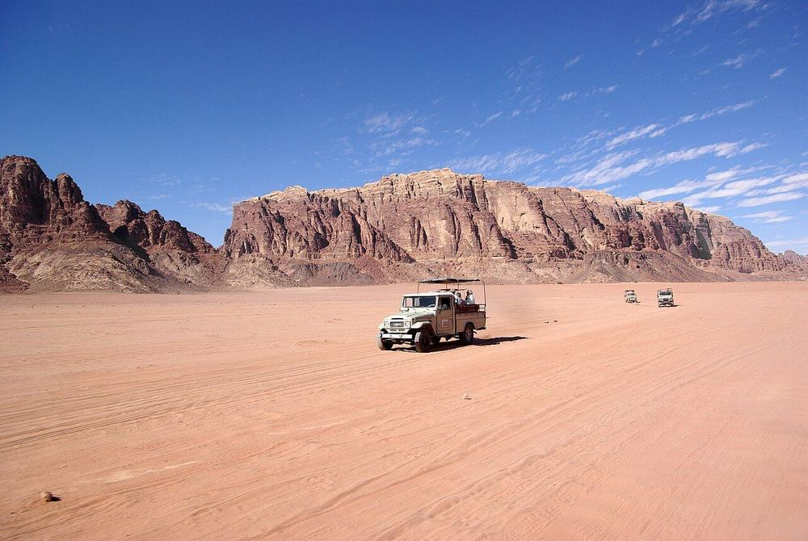
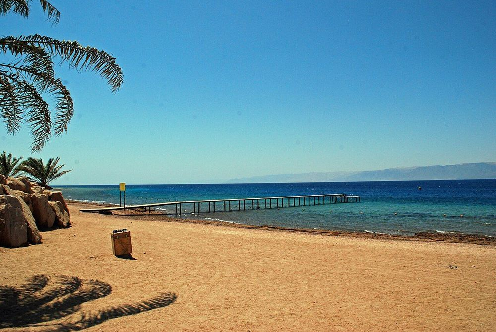
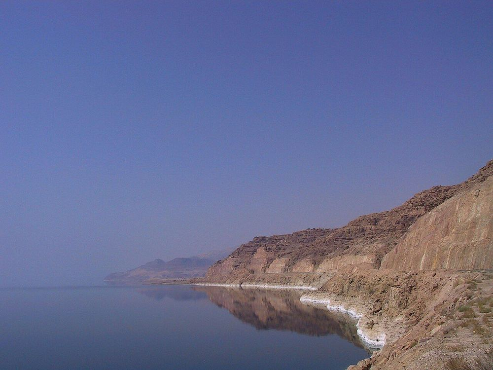
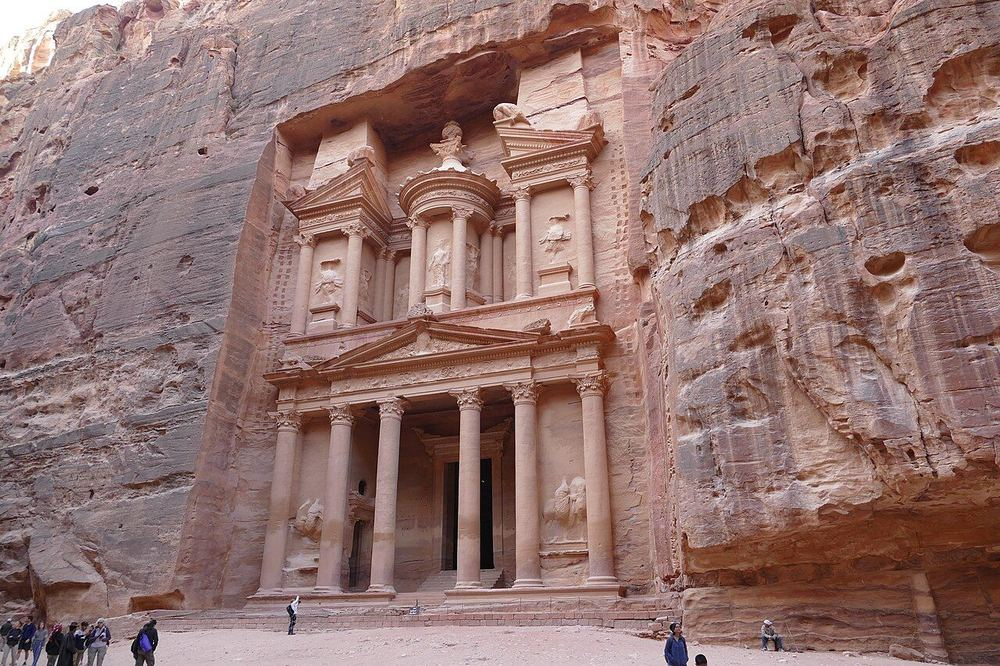
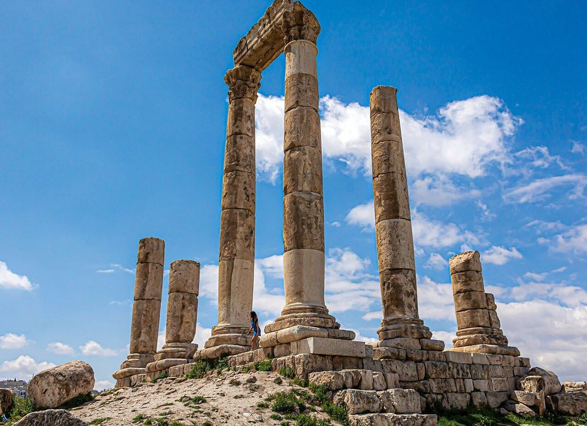

5Days
4 nights


South · About 4 hours from Amman UNESCO World Heritage
A protected desert of red sand and sandstone mountains, best seen from a 4×4 and a night under the stars.
Overview
Sandstone mountains rise straight out of the red sand of Wadi Rum, a UNESCO World Heritage Site since 2011. Rock carvings and inscriptions here record some 12,000 years of human life. Look at how wind and water have worn the rock into rounded domes, hollows and deep vertical cracks.
Explore by 4×4 or camel, then spend the night in a Bedouin camp under some of the clearest skies in the region.
Highlights
Local Bedouin guides drive between dunes, canyons and natural rock bridges, stopping wherever the views open out.
Carvings of people and camels, and lines of ancient writing, cover the rock walls in places such as Khazali Canyon.
Dinner is often zarb: meat and vegetables slow-cooked in a pit under the sand.
Far from city lights, the sky is dark enough on clear nights to see the Milky Way.
Travel programs
Wadi Rum is part of all seven of our programs. Every program can be adjusted for your dates, pace and hotels.

5Days
4 nights

5Days
4 nights

6Days
5 nights
From USD 1,065 per person
View itinerary
6Days
5 nights
From USD 976 per person
View itinerary
7Days
6 nights
From USD 1,120 per person
View itinerary
8Days
7 nights
From USD 1,315 per person
View itinerary
8Days
7 nights
From USD 1,290 per person
View itinerary